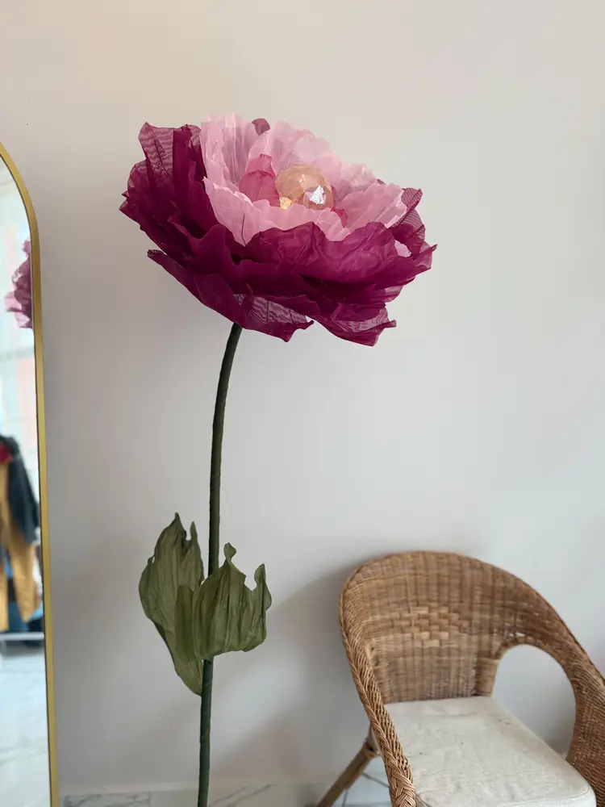
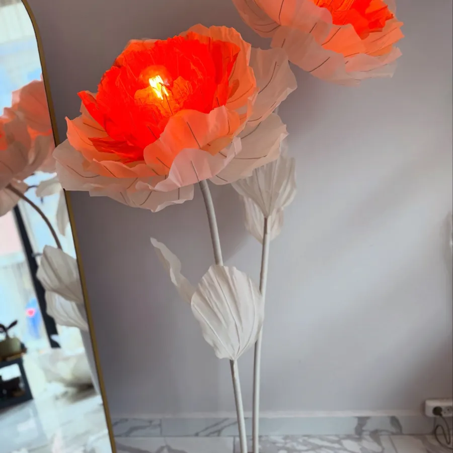
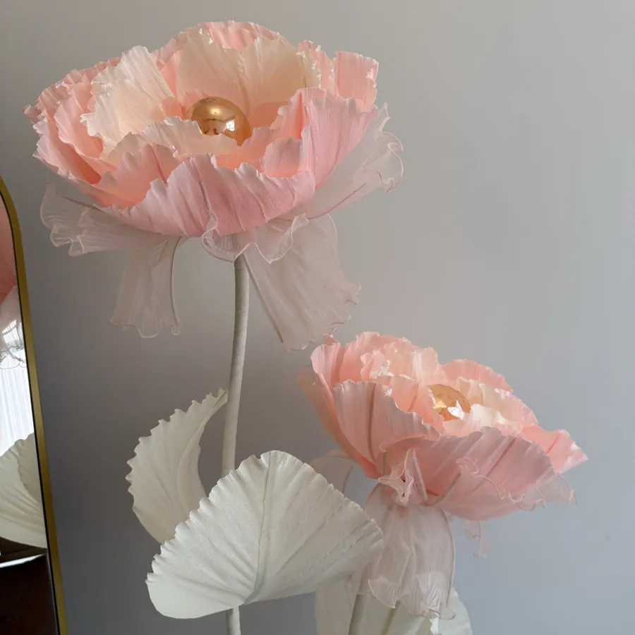
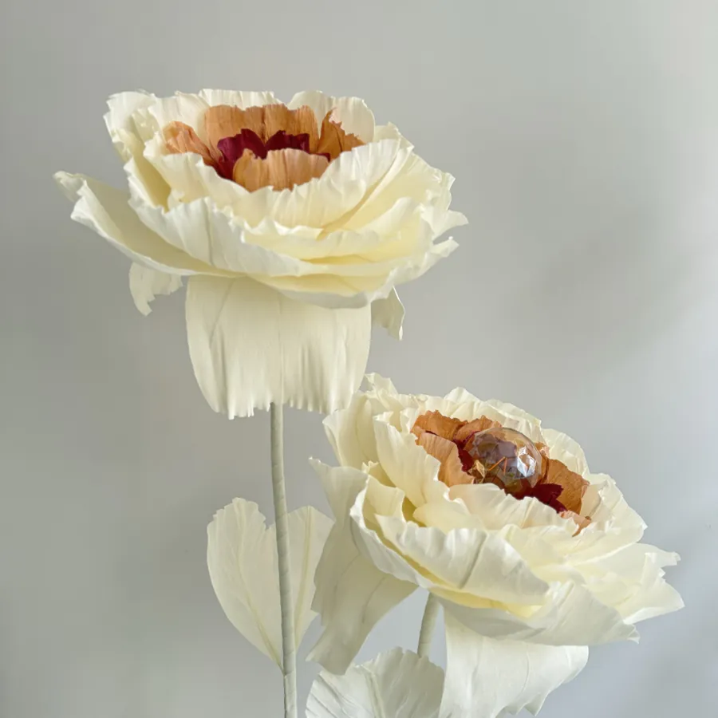
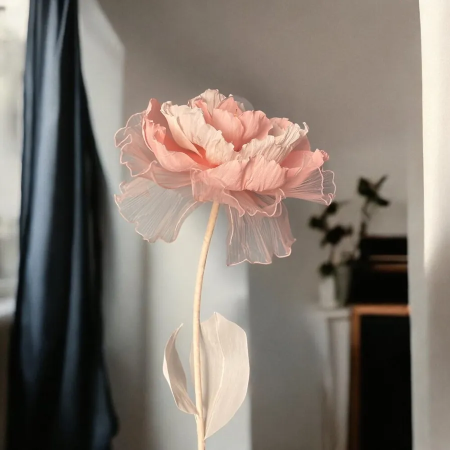
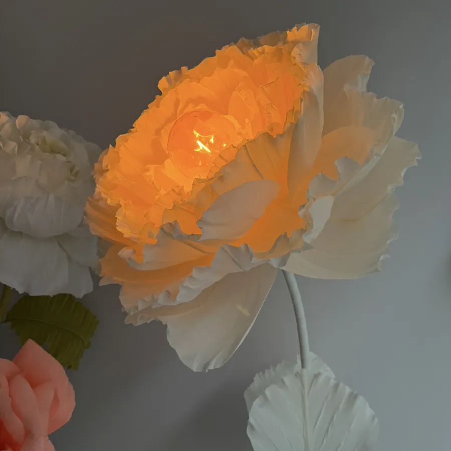
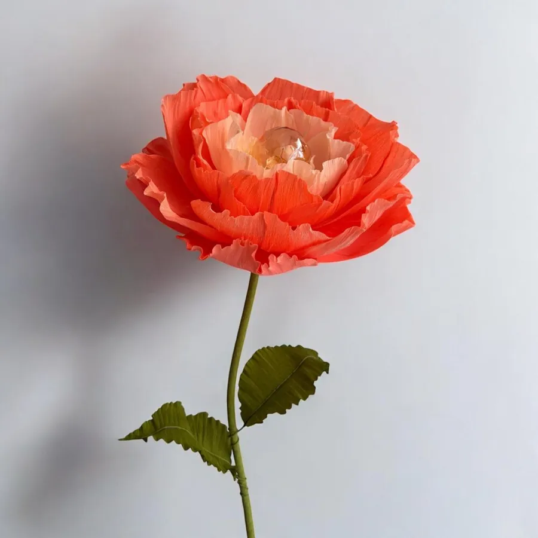
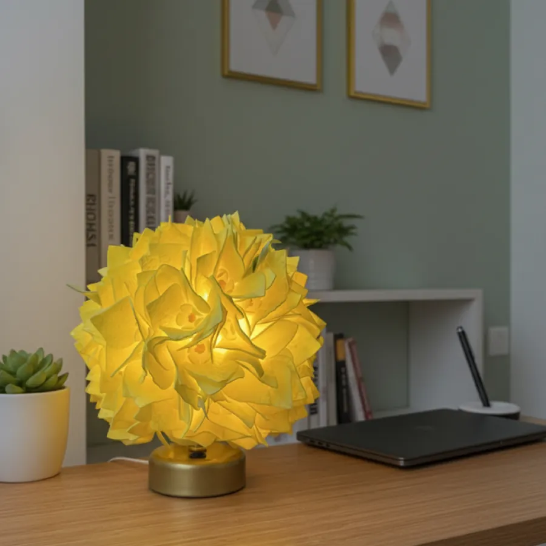
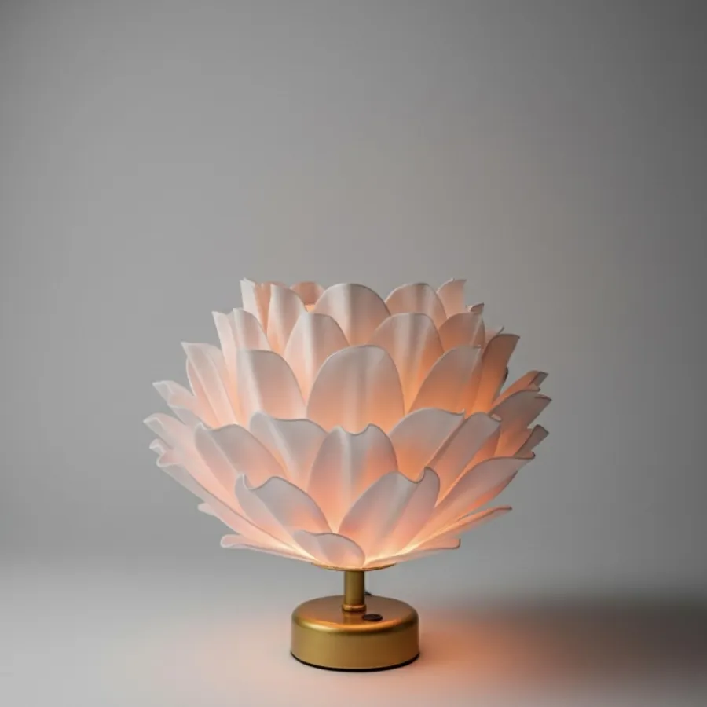

Çiçek lambader ve masa lambası
Dev çiçek lambader, elde yapılır, ışıkla açar.
Organze, krapon ve kumaştan elde şekillendirilen, içinden ışık yanan dev çiçekler. Boyu 1,60–1,70 m civarında lambaderler ve masa lambaları; dilediğiniz renkte, dilediğiniz model.

Neden Eden Floral Art
Işıkla açan bir çiçek
- 01
Elde, tek tek
Her lambader siparişe göre atölyemizde organze, krapon ve kumaş çiçeklerle elde hazırlanır.
- 02
Dilediğiniz renkte, dilediğiniz model
İstenilen renk ve modelde çalışabiliyoruz; hazır modellerden de seçebilirsiniz.
- 03
Işık çiçeğin içinde
Organze ve kağıt çiçekler ışıkla buluşunca yumuşak geçişler ve sıcak bir parlaklık verir.
- 04
Lambader ve masa lambası
Boyu 1,60–1,70 m civarında zemin lambaderleri ve masa üstü için daha küçük modeller.
Dev çiçek lambader nedir?
Dev çiçek lambader, ucunda büyük bir çiçek taşıyan ve ışığı çiçeğin içinden veren dekoratif bir aydınlatmadır. Eden Floral Art'ta çiçekler organze, krapon (krepe kağıdı) ve kumaştan atölyede elde şekillendirilir; ışık yaprakların arasından geçtiği için çiçek yumuşak ve sıcak bir parlaklıkla yanar. Tek gövdeli modellerin toplam boyu 1,60–1,70 m civarındadır; masa üstü için daha küçük masa lambası modellerimiz de var.
Organze lambader ve malzeme
Organze lambaderde çiçek organze kumaştan, diğer modellerde renklendirilmiş krepe kağıdından hazırlanır; ikili Freya'da organze ve krapon bir arada kullanılır. Lambaderlerde gövde şekil verilebilen esnek borudur, alttaki ayaklık demirdendir; çiçeği dik bırakabilir ya da odanın köşesine doğru eğebilirsiniz. Lambaderde klasik duy kullanılır, kablo 2 metredir; ışık rengini siz seçersiniz. Masa lambası modellerinde EVA foam kullanılır, yaprakları ıslak bezle silinebilir.
Boyutlar
Boyutlar tasarıma göre değişir. İlanlardaki örneklerde çiçek çapı 55 cm'dir; ikili Freya'da iki çiçeğin boyu 170 ve 160 cm'dir. Masa lambası modelleri yaklaşık 17–34 cm çapında, 26–30 cm yüksekliğindedir. Farklı boy ya da renk için DM'den yazmanız yeterli.
Nasıl sipariş verilir?
- Hazır modelleri mağaza sayfasından seçip sepete ekleyin; ödeme Shopier'de yapılır.
- Başka renk ya da model isterseniz Instagram'dan (@eden.floralart) DM ile yazın.
- Lambader siparişe göre atölyede elde hazırlanır; üretim, tasarıma göre 1–3 hafta sürebilir. Genellikle 2–3 hafta önceden sipariş vermenizi öneriyoruz.
- Türkiye geneline kargoyla gönderilir; kargo süresi 4 iş günüdür (üretim buna dahil değildir), ücret paketin boyutuna göre değişir.
Satın alma
Lambaderler yalnız satılır, kiralama yapılmıyor. Hazır modelleri mağazadan alabilir, özel renk ve model için DM'den yazabilirsiniz; Türkiye'nin her yerine kargoyla gönderiyoruz.
Aynı çiçekler, başka işlerde
Işıklı organze çiçekleri vitrin süslemede de kullanıyoruz. Bakım için dev kağıt çiçek bakımı rehberimize bakabilirsiniz.
Örnek modeller
Lambader ve masa lambası








Sıkça sorulanlar
Merak edilenler
Dev çiçek lambader nedir?
Dev çiçek lambader, ucunda büyük bir çiçek taşıyan ve ışığı çiçeğin içinden veren dekoratif bir aydınlatmadır. Çiçekler organze, krapon (krepe kağıdı) ve kumaştan atölyede elde şekillendirilir.
Lambaderin boyutu ne kadar?
Boyutlar tasarıma göre değişir. Tek gövdeli modellerde toplam boy 1,60–1,70 m civarındadır; ilanlardaki örneklerde çiçek çapı 55 cm'dir. Masa lambası modelleri yaklaşık 17–34 cm çapında ve 26–30 cm yüksekliğindedir. Farklı boy isterseniz DM'den yazın.
Organze lambader ile kağıt (krapon) lambader arasındaki fark nedir?
Organze lambaderde çiçek organze kumaştan, diğer modellerde renklendirilmiş krepe kağıdından hazırlanır. Krapon (kağıt) çiçekler güneşten etkilenebilir; tül ve organze etkilenmez. Lambaderi güneş alan bir yere koyacaksanız DM'de belirtin, malzemeyi buna göre seçelim.
Lambaderin rengini ve modelini seçebilir miyim?
Evet, istenilen renk ve modelde çalışabiliyoruz. Hazır modellerden seçebilir ya da renk ve fikrinizi Instagram'dan (@eden.floralart) DM ile yazabilirsiniz.
Siparişi ne kadar önce vermeliyim?
Ne kadar erken sipariş verilirse o kadar iyi; genellikle 2–3 hafta önceden sipariş verilmesini öneriyoruz.
Siparişim ne zaman hazır olur?
Her lambader siparişe göre atölyede elde hazırlandığı için üretim, tasarıma göre 1–3 hafta sürebilir. Hazır olduktan sonra Türkiye'nin her yerine kargoyla 4 iş günü içinde ulaşır (üretim süresi buna dahil değildir); kargo ücreti paketin boyutuna göre değişir.
Lambader kiralanıyor mu?
Lambaderler yalnız satılır, kiralama yapılmıyor. Türkiye'nin her yerine kargoyla gönderiyoruz.
Nereden sipariş verebilirim, ödemeyi nasıl yaparım?
Hazır modelleri mağaza sayfamızdan sepete ekleyebilirsiniz; ödeme güvenle Shopier üzerinden yapılır. Özel renk ve model için Instagram'dan DM ile yazabilirsiniz.
Fiyatlar nedir?
Hazır modellerin güncel fiyatları mağaza sayfasında yazıyor. Özel renk, boy veya tasarım için fikrinizi DM'den yazın, size özel fiyat verelim.
Lambaderin tozu nasıl alınır?
Tozları hafif nemli bir bezle alınabilir. Krapon çiçekler güneşten etkilenebileceği için doğrudan güneş ışığından uzak tutulmalıdır.
Başlayalım
Işığınızı birlikte seçelim.
Özel renk için Instagram'dan DMShopier mağazası
Diğer hizmetler: Doğum odası süsüNişan & düğünVitrin tasarımıOrganizasyon firmaları